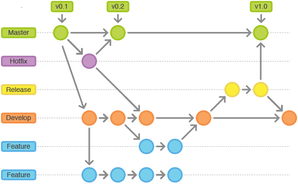

前两天在面试中，遇到GitFlow的问题，涉及到知识盲区，今天趁有空学习一下。
Mission Start!
什么是Git Flow
Git Flow是2010年由Vincent Driessen提出的在进行产品开发时Git的行为规范（原文链接）。类似的规范还有Github Flow、Gitlab Flow。
Git Flow的分支
Git Flow中定义了两类分支：主分支、辅助分支。
主分支用于组织与软件开发、部署相关的活动。主分支是所有开发活动的核心分支，可分为
master分支、develop分支。辅助分支是为了解决特定的问题而进行的各种开发活动。辅助分支有
feature分支、release分支、hotfix分支。
master分支
master分支用于存放可上线的稳定代码。
- 来源：
release分支、hotfix分支 - 去向：无
develop分支
develop 分支是开发的基础分支，当需要增加功能时可以从该分支切出一个 feature 分支。
- 来源：
feature分支、release分支、hotfix分支 - 去向：
release分支
feature分支
当需要增加新功能时，使用 feature 分支。feature 分支从 develop 分支切出，完成时也要合并到 develop 分支。
- 来源：
develop分支 - 去向：
develop分支
release分支
release 分支是发布到 master 分支前的版本。可以把已完成的 develop 分支合并到 release 分支，在该分支上做最后的测试。测试通过即可完成 release 分支，完成时会将 release 合并到 master 以及 develop 两个分支上。合并到 develop 分支是因为在 Release 分支上可能会有代码修改，需要将修改同步到 develop 分支上。
- 来源：
develop分支 - 去向：
master分支、develop分支
常用命名：release-*
hotfix分支
当线上产品产生Bug时，从 master 分支开一个 hotfix 分支用于修复，修复完成后会合并到 master、develop 分支。
- 来源：
master分支 - 去向：
master分支、develop分支
常用命名：hotfix-*
总结
以上分支的关系如下图所示（引用自Git Flow简介）：

git-flow
git-flow是配合Git Flow工作流程使用的一个Git扩展。可以简化Git Flow的操作。
安装
Mac OSX
brew install git-flow
Debian/Ubuntu Linux
apt-get install git-flow
Windows搭配Cygwin
wget -q -O - --no-check-certificate https://github.com/nvie/gitflow/raw/develop/contrib/gitflow-installer.sh | bash
初始化
git flow init
feature
- 新建feature分支
git flow feature start FeatureName
- 结束feature分支（将当前feature分支合并到develop；删除当前分支；并切换到develop分支）
git flow feature finish FeatureName
- 公布feature分支（当需要与同伴一起开发时，将feature分支公布到服务器上）
git flow feature publish FeatureName
- 从服务器上获取一个别人公布的feature分支
git flow feature pull origin FeatureName
release
- 创建一个release分支
git flow release start ReleaseName
- 公布一个release分支
git flow release publish ReleaseName
- 结束一个release分支（把release分支合并回master，给本次发布打tag；把release合并回develop；删除release分支）
git flow release finish ReleaseName
// 最后不要忘记把tag push到服务器：git push --tags
hotfix
- 创建一个hotfix分支
git flow hotfix start HotfixName
- 结束一个hotfix分支（合并到develop、master分支，并删除hotfix分支）
git flow hotfix finish HotfixName
Mission Complete!